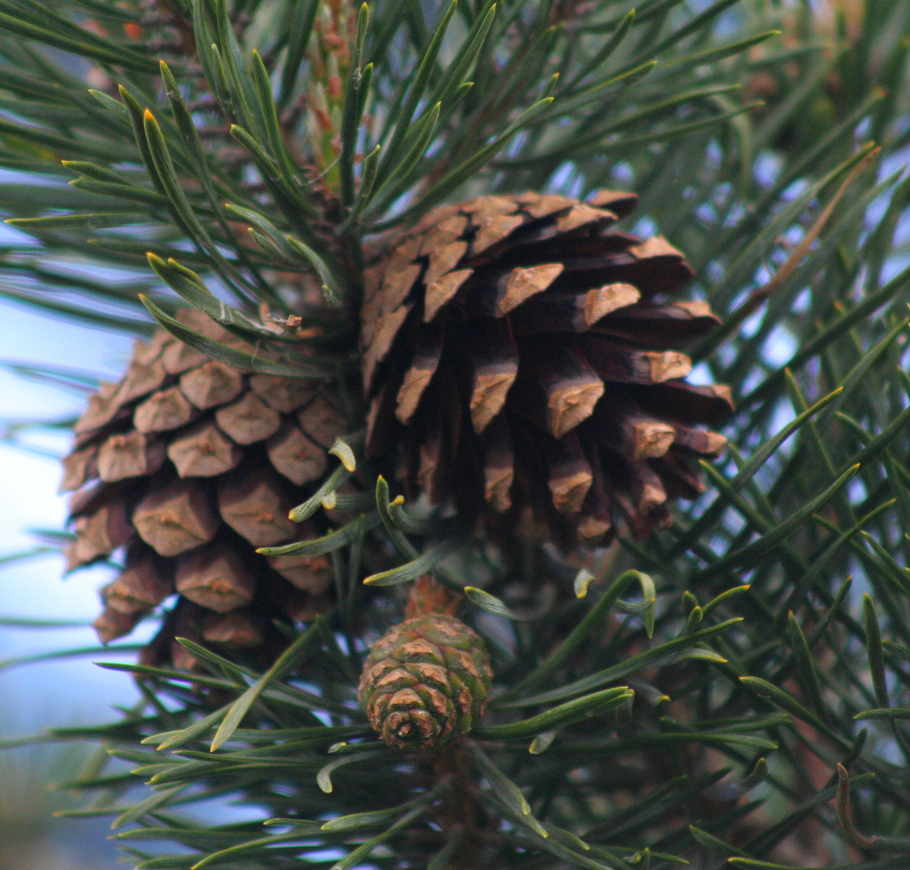

Gimnospermas!
São plantas quase completas, só falta flor e fruto. Um bom exemplo delas são os pinheiros.
Características:
- Pólen
- São as primeiras plantas a possuirem grão de pólen.
- Reprodução 
- Possuem estruturas reprodutivas visíveis.
- Plantas levemente elaboradas
- Não têm flores nem frutos.
- Novidade
- São as primeiras a possuir sementes.
Organização Corporal
A sua parte mais duradoura é o esporófito que conta com o aparecimento de estróbilos em épocas reprodutivas a partir de uma modificação das folhas. Vale ressaltar que algumas Gimnospermas são monóicas, ou seja, contêm os dois tipos de estróbilos. Já outras são dióicas e cada árvore contém um tipo de estróbilo.
Reprodução

Vamos usar o pinheiro-do-paraná (Araucária angustifólia) como modelo para explicar a reprodução das gimnospermas. Nessa planta os sexos são separados: a que possui estróbilos masculinos não possuem estróbilos femininos e vice-versa. Em outras gimnospermas, os dois tipos de estróbilos podem ocorrer numa mesma planta.
O estróbilo masculino produz pequenos esporos chamados grãos de pólen. O estróbilo feminino produz estruturas denominadas óvulos. No interior de um óvulo maduro surge um grande esporo.
Quando um estróbilo masculino se abre e libera grande quantidade de grãos de pólen, esses grãos se espalham no ambiente e podem ser levados pelo vento até o estróbilo feminino. Então, um grão de pólen pode formar uma espécie de tubo, o tubo polínico, onde se origina o núcleo espermático, que é o gameta masculino. O tubo polínico cresce até alcançar o óvulo, no qual introduz o núcleo espermático.
No interior do óvulo, o grande esporo que ele abriga se desenvolve e forma uma estrutura que guarda a oosfera, o gameta feminino. Uma vez no interior do óvulo, o núcleo espermático fecunda a oosfera, formando o zigoto.
Este, por sua vez, se desenvolve, originando um embrião. À medida que o embrião se forma, o óvulo se transforma em semente, estrutura que contém e protege o embrião.